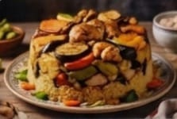
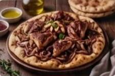
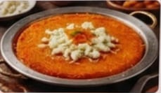
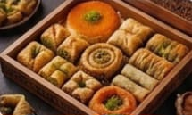
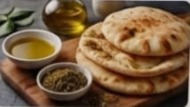
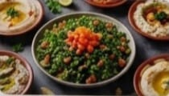

مطبخ رام الله: ملتقى النكهات الجبلية والحداثة
"استمتع بمذاق يمزج بين أصالة الزيت والزعتر من قرى رام الله العريقة، وبين إبداعات المطبخ المعاصر؛ حيث تلتقي أطباق المسخن الجبلية الشهيرة بأجواء المقاهي والمطاعم الحديثة في قلب المدينة."

مقلوبة الخضار
طبق فلسطيني كلاسيكي يقلب عند التقديم. طبقات من الأرز والخضار المقلية (الباذنجان، الزهرة، البطاطس) واللحم أو الدجاج. وجبة غداء يومية محبوبة.

مسخن رام الله
أكلة فلسطينية تراثية بامتياز، تشتهر بها رام الله. خبز طابون طري مشبع بزيت زيتون بكر، طبقات من البصل المكرمل والسماق، ودجاج محمر. تقدم كوجبة عائلية غنية في المناسبات.

كنافة نابلسية
الحلوى الأشهر، تُصنع من جبن النابلس الحلو والكنافة الناعمة أو الخشنة. تقدم دافئة وتعتبر رمزاً للكرم الفلسطيني.

حلويات فلسطينية مشكلة
حلويات غنية بالفستق والمكسرات والعسل، من أشهرها كنافة نابلس (بنسخة رام الله) والبقلاوة. تقدم في المناسبات والأعياد.

زعتر وزيت مع خبز طازج
الفطور الفلسطيني الأصيل. خبز طابون ساخن يغمس في زيت زيتون بلدي بكر وزعتر جبلي. وجبة بسيطة وصحية ترمز للهوية.

تبولة ومقبلات
مقبلات باردة أساسية في كل مائدة. تبولة منعشة من البقدونس والبرغل، حمص كريمي، ومتبل باذنجان مشوي. تُزين المائدة وتفتح الشهية.